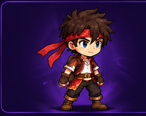
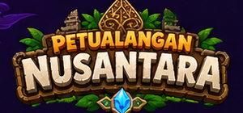
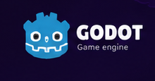
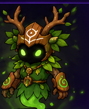
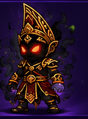
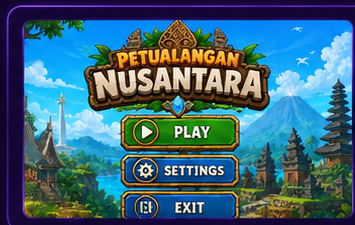
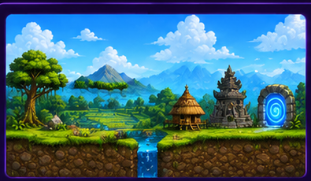
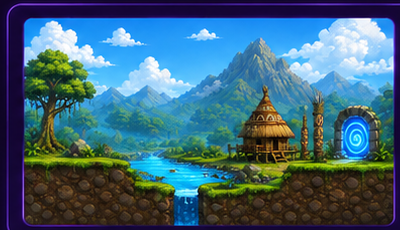

PLAYER
Raka
Karakter utama yang dikendalikan pemain sepanjang perjalanan.
Gim platform 2D bertema budaya Indonesia yang mengajak pemain menjelajahi berbagai lingkungan, menghadapi musuh, mengumpulkan koin dan kristal, serta menyelesaikan setiap level.


Petualangan Nusantara merupakan proyek gim 2D yang saya kembangkan menggunakan Godot Engine. Gim ini mengangkat tema budaya Indonesia melalui lingkungan, karakter, serta elemen visual yang terinspirasi dari berbagai daerah di Indonesia.
Dalam proyek ini saya berperan sebagai Programmer / Gameplay. Saya mengerjakan berbagai bagian sistem permainan agar karakter dapat bergerak, menyerang, berinteraksi dengan lingkungan, serta menyelesaikan setiap level.
Mengatur pergerakan, lompatan, serangan, serta sistem kesehatan karakter.
Membuat sistem musuh, HP, serangan, damage, dan mekanisme kematian.
Mengatur koin, kristal, skor, portal, serta perpindahan antar level.
Mengimplementasikan lingkungan dan elemen gameplay ke dalam level.
Beberapa karakter yang digunakan dalam Petualangan Nusantara.

Karakter utama yang dikendalikan pemain sepanjang perjalanan.

Musuh yang ditemui pada bagian awal perjalanan pemain.

Musuh dengan tantangan yang lebih tinggi pada perjalanan berikutnya.

Tampilan awal digunakan sebagai halaman utama sebelum pemain memasuki permainan.
Setiap level memiliki lingkungan dan suasana yang berbeda berdasarkan tema wilayah Indonesia.

Lingkungan awal dengan elemen seperti sawah, candi, rumah tradisional, pepohonan, dan suasana pedesaan.

Lingkungan dengan suasana yang lebih eksotis dan menantang, terinspirasi dari alam serta budaya Papua.
Petualangan Nusantara merupakan salah satu proyek yang membantu saya mengembangkan kemampuan dalam programming, gameplay development, dan game design.
← Kembali ke Portofolio